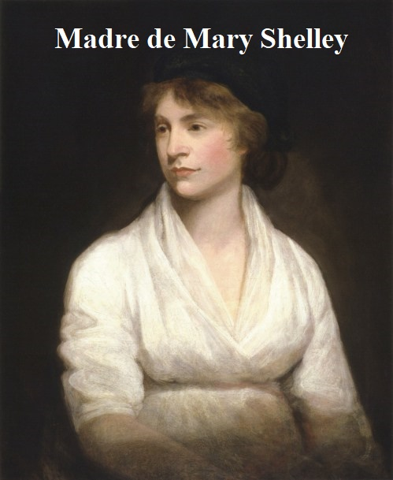
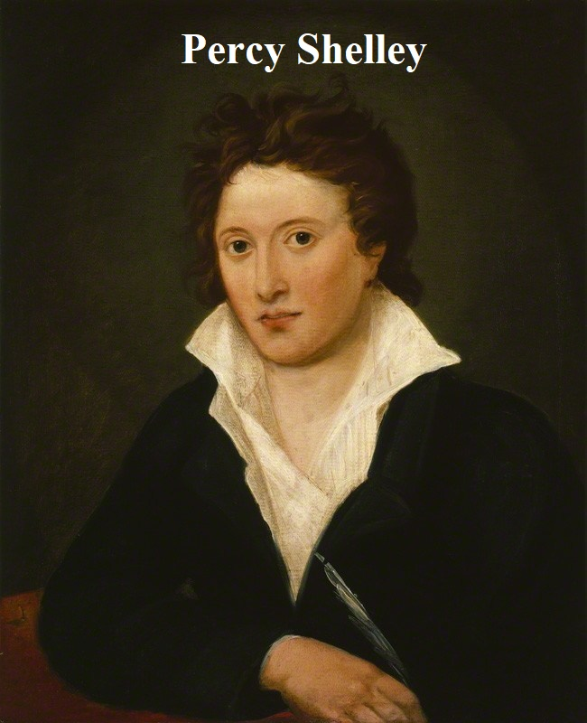
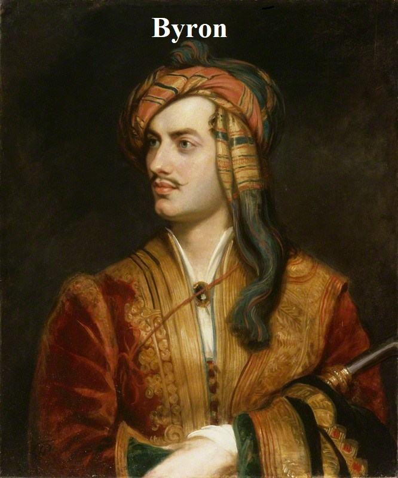
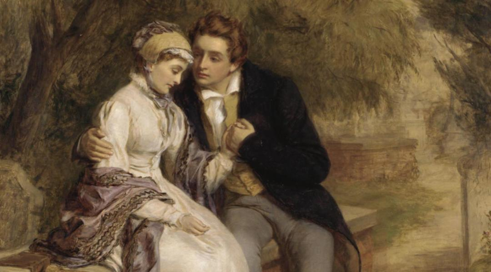
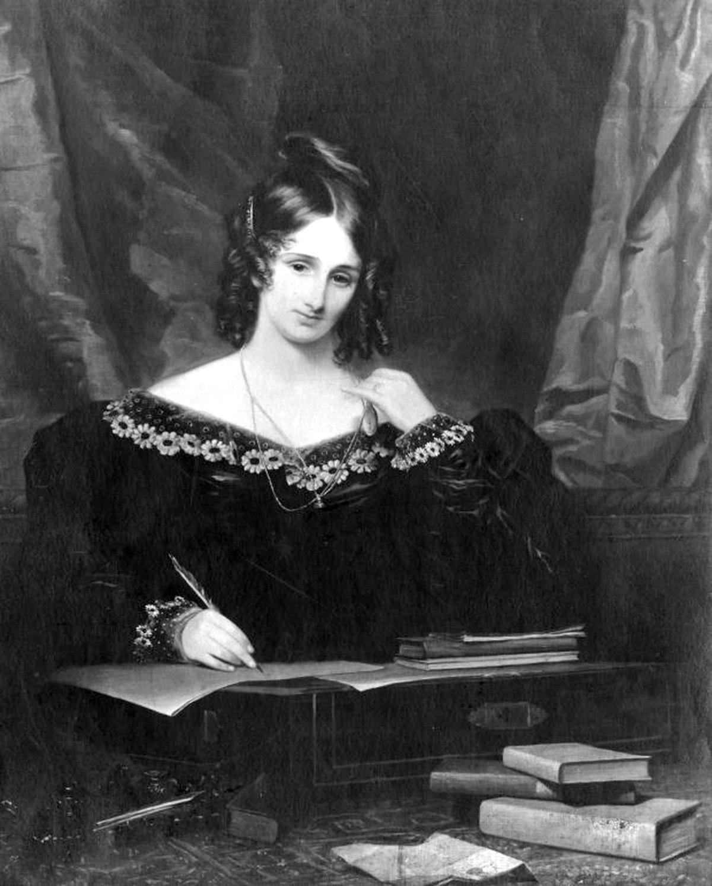
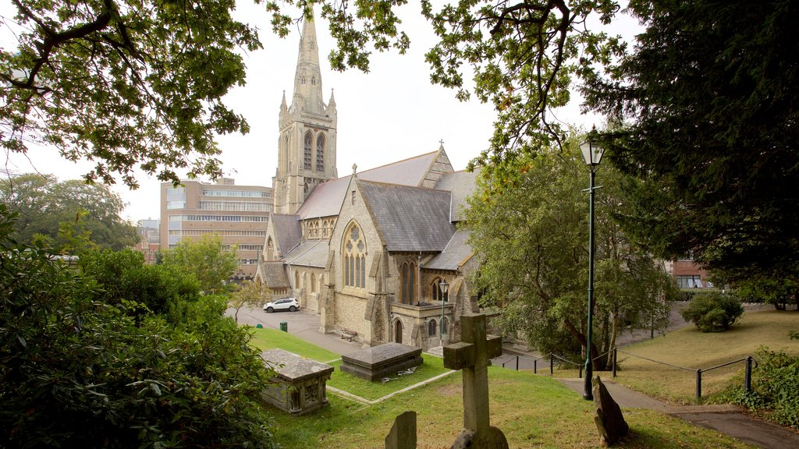
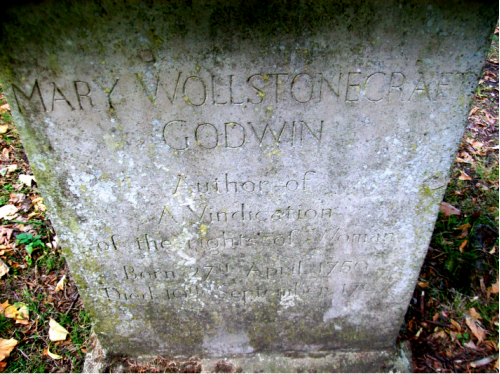

Mary Shelley nació el 30 de agosto de 1797 en Londres. Hija del filósofo William Godwin y de la escritora y feminista Mary Wollstonecraft. A los pocos días de su nacimiento su madre, quien había escrito Vindication of Women Rights, murió de unas fiebres dejando a su marido al cuidado de Mary y de su hermana de tres años y medio Fanny Imlay. Casado Godwin posteriormente con una viuda que ya tenía dos hijas con la que el filósofo alumbraría un nuevo vástago.Siendo una niña se evadía en el cementerio de Saint Pancras, donde fue enterrada su progenitora. Sobre su tumba aprendió a leer. Su padre solía acompañarla junto a su hermanastra Fanny y practicaban lectura sobre las lápidas.En 1814, a los 16 años de edad, Mary abandonó su hogar y su país con el poeta Percy Shelley, con el que había iniciado una relación a pesar de estar casado. La pareja viajó a Francia y a Suiza.Perdidamente enamorada de Percy B. Shelley desde la primera vez que lo vio, Godwin, no puso ningún reparo en que corriera tras él. No fue ese el caso de la esposa del poeta quien, humillada, ofendida y embaraza siguió a la feliz pareja hasta La Spezia, localidad de la costa italiana en que se establecieron. A los desarreglos deducibles de semejante situación no tardó en sumarse el mismísimo Byron, siempre afecto a toda clase de desórdenes.
  Contrajeron matrimonio en 1816, después de que la primera esposa de Shelley se quitara la vida ahogándose. Fruto de esta convivencia fueron varios embarazos y un único hijo, un varón, solo el pequeño Percy Florence sobrevivió a la infancia. Percy murió antes de cumplir los 30 años en una tormenta mientras navegaba. Su cuerpo fue incinerado pero antes se le extrajo el corazón. Mary lo envolvió en la página de una poesía y trasladó la reliquia, durante un cuarto de siglo, hasta la fecha de su muerte.Creadora del libro que inauguró la ciencia ficción y que aún hoy se erige como uno de los grandes relatos de horror de todos los tiempos; en 1818 publicó la primera y más importante de sus obras, la novela Frankenstein o el moderno Prometeo. Según parece, escribió la historia de Victor Frankenstein por una apuesta. La noche del 16 de junio de 1816, se reunió con Lord Byron y otros en una villa en los alrededores de Ginebra. Encerrados en la casa por una tormenta, se leyeron cuentos de terror para entretenerse. Mary imaginó entonces a Frankestein inspirada en una pesadilla que tuvo a los dieciocho años de edad. Escribió la novela tras una apuesta con Byron, tal y como narra ella misma en el prólogo de la edición de "Frankenstein" de 1831.
 Esta obra, un logro más que notable para una autora de solo 20 años, se convirtió de inmediato en un éxito de crítica y público. La historia de Frankenstein, estudiante de lo oculto y de su criatura subhumana creada a partir de cadáveres humanos, se ha llevado al teatro y al cine en varias ocasiones. Tras la muerte de su esposo, en 1822, Mary se dedicó a difundir la obra del poeta. Publicó así sus Poemas póstumos (1824) y editó sus Obras poéticas (1839) con valiosas y detalladas notas.Mary Shelley falleció en Londres a causa de un tumor cerebral mientras dormía, el 1 de febrero de 1851. Su última voluntad fue ser enterrada junto a sus padres. Descansan en el cementerio de St Peter, Bournemouth.
 